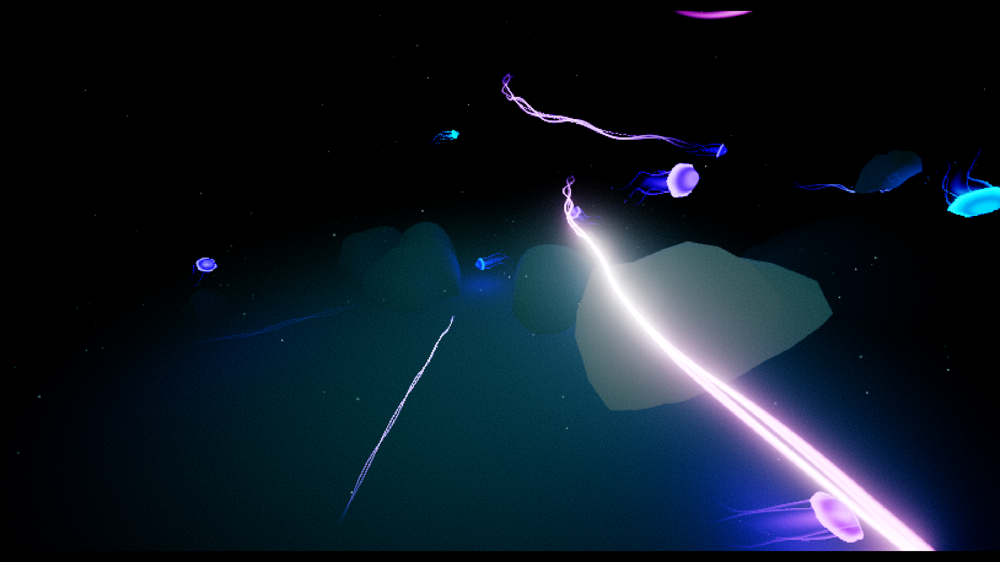

::: ::: :::::::::: ::: ::: ::: :::
:+:+: :+:+: :+: :+: :+: :+: :+:
+:+ +:+:+ +:+ +:+ +:+ +:+ +:+ +:+
+#+ +:+ +#+ +#++:++# +#++:++#++ +#+ +:+
+#+ +#+ +#+ +#+ +#+ +#+ +#+
#+# #+# #+# #+# #+# #+# #+#
### ### ########## ### ### ########
| Member | AKA | contribution | url |
|---|---|---|---|
| luutifa | gustafla | code, design | |
| kallok | luks | music | https://kallok.net |
This Raspberry Pi 5 demo with an underwater theme was Mehu's first serious Raspberry Pi production using the SDL3 GPU API. The engine, originally written in Rust, was fully ported to Zig and extended with features such as MSAA and scripting, buffers, textures, drawcall filtering (via specialized functions using Zig's `comptime` and `inline` features), camera paths, SDF fonts etc.

This sphere traced SDF demo was mostly put together by hacking my previous shaders at the Graffathon party. The demo won 1st place in the Advanced compo. I had been exploring SDL3 GPU and had written a new shader display engine around it in Rust. The Rust rocket library also got a few QoL updates from me during development :)
This widescreen demo was the result of learning wgpu. I also submitted PRs to a new rocket library in Rust. This was Mehu's first time doing deferred rendering and shadow mapping in a demo. I very much liked the idea of the widescreen demo compo.
A demo for the Raspberry Pi (original model B). I wish I had titled it "Going Down".
A demo for the Raspberry Pi (original model B).